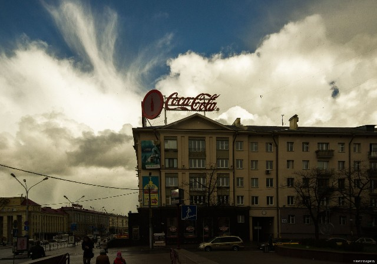
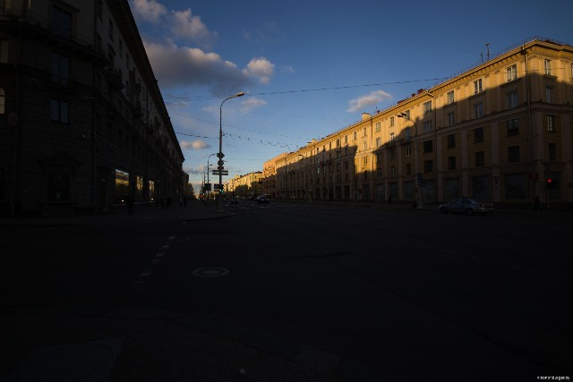
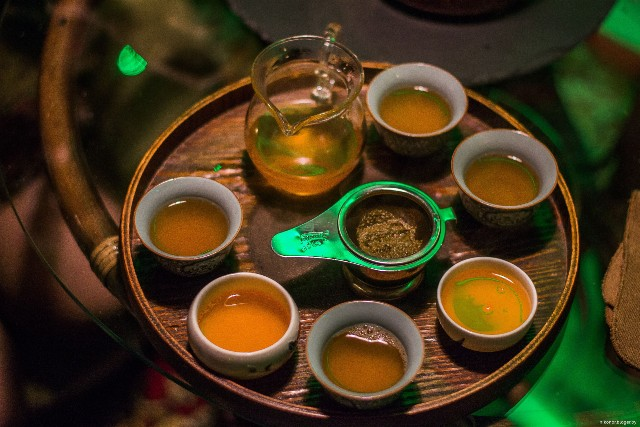

В новостной ленте попалась на глаза забавная картинка. Дед Мороз на фоне заснеженных елей и с посохом. Подпись «После 3-х месяцев зимы 5-й в подарок». И в самом деле, конец апреля на дворе, а погода никак не успокоится. Снег чередуется с дождем, солнце то прогревает воздух то прячется за облака. Становится холодно и понимаешь, что до настоящего тепла еще далеко.
Но не смотря на холод и снег, дождь и порывистый ветер, есть в этом переходном периоде то, что заставляет взять фотокамеру, оторваться от стула и выйти на улицу. Первое это небо. Облака подгоняемые ветром, складываются в такие композиции, что просто диву даешься. И второе это отражение всей этой живописи в окнах, витринах и лужах.
Обращали ли вы когда нибудь внимание на то, что перед грозой и сильным дождем город как будто проявляется. Усиливается контраст, на фасадах зданий играют тени, придавая объем и яркие цвета становятся еще ярче. И именно в такие моменты получаются очень сочные и эффектные фотографии города.

Заход солнца. День близится к завершению. Последние лучи скользят по верхним этажам домов, придавая зданиям золотистый оттенок.
Погода понемногу успокаивается и ветер стихает. Но все равно холодно, не по-весеннему. Дома сидеть, как говорил герой Броневого в фильме «Покровские ворота» смутно и тягостно, хочется побыть среди людей, надо развеяться. Мы созваниваемся с моим приятелем и идем дышать свежим, не по-весеннему морозным воздухом.

Насмотревшись на небесные картины, попав в очередной раз под снегопад мы приняли решение двинуть таки домой. Остановка недалеко и...тут я вспоминаю, что собирался зайти и пригласить на музыкальное мероприятие в студии «Арт-квартал» чайный клуб «Чайное состояние». Мастер-класс от этого клуба, на одном концерте, меня просто поразил. Настолько увлеченно и со знанием ньюансов девушки рассказывали про этот прекрасный напиток, что все слушали не проронив, ни звука. Затем пили чай, приготовленный при нас и общались. Более дружественной атмосферы нельзя было и придумать. Поэтому и возникло желание провести еще один вечер в такой теплой, чайной компании.
Итак мы зашли и попали в совершенно другой мир. Здесь не просто спокойно и умиротворенно, здесь царит гармония, а она не терпит суеты и шума. Невдалеке за чайным столиком молодой человек готовился к какому-то священнодейству и раскладывал предметы (как потом оказалось) для заваривания чая. После обмена контактами между мной и Еленой она любезно пригласила нас присоединиться к дегустации напитка, который молодой человек приготовил при нас, тут же. На всякий случай отмечу, это не чай из пакетиков и даже не тот листовой который мы все привыкли пить по утрам. Точных названий я не запомнил, к сожалению, только «темный пуэр» и что-то еще. Но это было просто божественно. Обстановка и атмосфера располагали к спокойствию и непринужденной беседе.

На часы я глянул когда было начало двенадцатого. Вот это зашли на десять минут. Мой друг пребывал в состоянии эйфории. Сказать, что ему понравилось все – не сказать НИЧЕГО. Вечер удался.